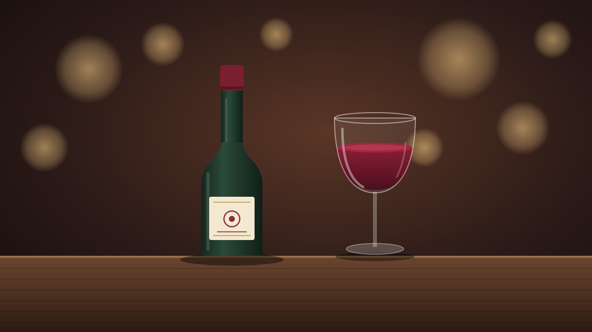

Nossos Vinhos
A Vinheria Agnello reúne rótulos nacionais e internacionais, dos tintos encorpados aos brancos leves e rosés frescos. Veja abaixo uma seleção do nosso estoque.

Catálogo
| Vinho | Tipo | Origem | Safra | Estoque |
|---|---|---|---|---|
| Malbec Reserva | Tinto | Argentina | 2020 | 15 |
| Cabernet Sauvignon | Tinto | Chile | 2019 | 22 |
| Tannat | Tinto | Uruguai | 2018 | 7 |
| Chardonnay | Branco | Brasil | 2022 | 18 |
| Sauvignon Blanc | Branco | Nova Zelândia | 2023 | 12 |
| Rosé Seco | Rosé | França | 2022 | 9 |
Não sabe qual escolher?
Conte para nós o prato ou a ocasião e indicamos o vinho ideal. Fale com a nossa equipe ou veja Como é o nosso atendimento